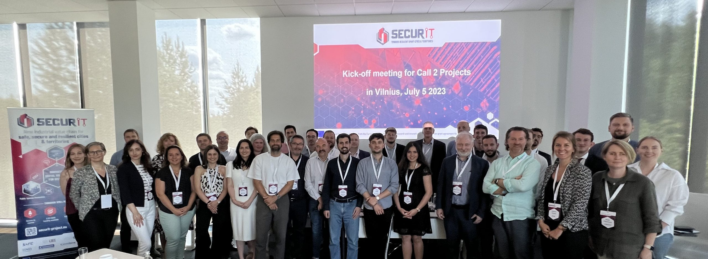

Welcome
Digital supply chain security for smart grid (DISCGRID), which is funded by the SecurIT project
About
DISCGRID will apply software transparency technologies for protecting software supply chains. The project will focus on secure firmware updates by providing auditability and accountability mechanisms. DISCGRID will leverage ExcID's technology for managing decentralized identifiers and will integrate it with components of Guardtime's MIDA.
In a demonstration that will be supported by two Estonian companies active in the energy sector (Elektrilevi OÜ and Enefit Connect), DISCGRID will showcase how a "Transparency Service," i.e., a service where information related to the lifecycle management of firmware updates is securely recorded, can mitigate software supply chain cyberattacks. DISCGRID will be one of the first demonstrators of software transparency in the smart-grid domain and it will produce a state-of-the-art security solution that can be used for securing software supply chains. DISCGRID's ambition is to expand to other market segments related to critical infrastructure protection.
News
- 7 Dec. 2023 Read our blog post describing DISCGRID concept.
- 5 Jul. 2023 Kick-off meeting at Vilnius.

The DISCGRID team
ExcID
ExcID develops identification, authorization, and access control solutions with focus on enterprise solutions and IoT systems.
Guardtime
Guardtime is a system engineering company, with deep experience in data-centric cyber security solutions and is heavily engaged in R&D in hash-based cryptography.